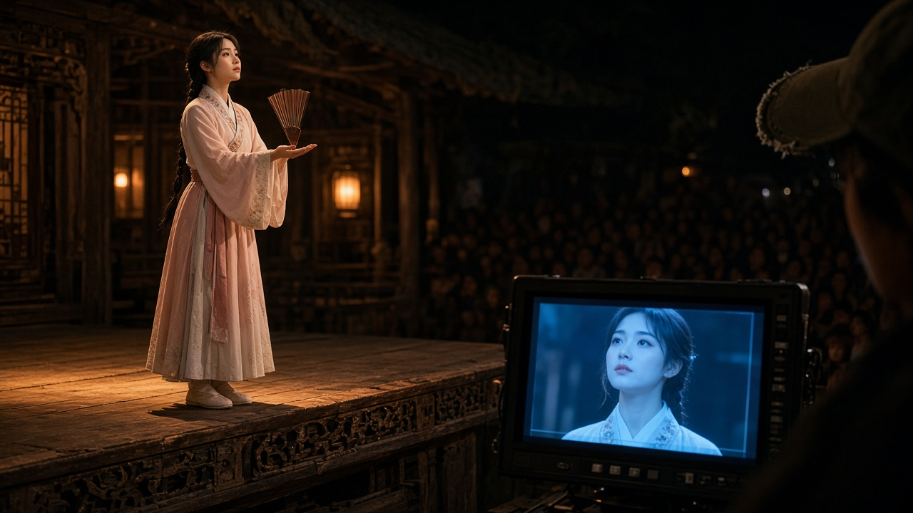

花鼓·留根（剧本与镜单）
花旦苗子阿花把村台夜戏当成告别素材答应拍客，开演前却被舅塞进《刘海砍樵》加演——她开口第一句腔时，才发现要走的人，还不会把自己说完。
已锁剧本摘要
主路是「想往外走 vs 技艺留根」。戏剧承诺是：阿花答应周哥拍「最后一场村台夜戏」当告别素材；开演前舅塞《刘海砍樵》折子加演；她上场第一句长沙官话花鼓腔，监视器里「像另一个人」；舅侧幕「砍完这樵，再谈走。」
人物锚点（入画不讲解）：阿花是细麻花辫，右耳一只小银圈；舅是腕上旧鼓槌绳；周哥是棒球帽帽檐磨损。三锚也可写成：右耳银圈 / 腕绳 / 帽檐磨损。
场次从茶馆→练功室门口，经练功室、村口露天台、侧幕/锣箱、侧幕妆区，到台口。
本页只放摘要，不展开完整剧本全文。
已锁镜单与设定
剧本 v1.3 已锁定。主镜单已锁定，现为 71 镜，入表画面约 8 分 12 秒（492 秒）。设定与造型均为 v2.1，已锁定。本页不展开完整镜单全文。
空间分成三区：门槛模块（茶馆→练功室门口）、练功室，以及村口露天台＋侧幕线＋锣箱位＋台下监视器。
设定预演
下面两张是已有的概念图，用来看空间和气氛，不是成片。没有把未完成的生成当成品，也不在本页续做生成。

